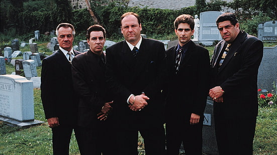
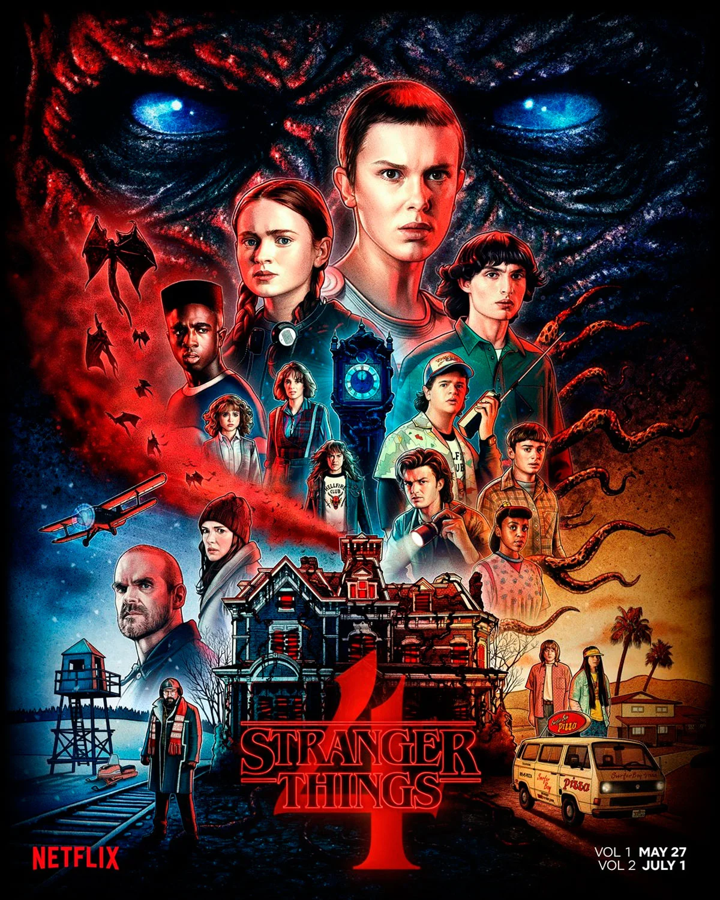

Los Soprano
Descripción: "Los Soprano" es una serie que sigue la vida de Tony Soprano, un mafioso italoamericano de Nueva Jersey que lucha por equilibrar su vida familiar con su rol como líder de una organización criminal. La serie explora temas de poder, familia, identidad y la salud mental a través de su narración profunda y personajes complejos.
Breaking Bad

Game of Thrones

Stranger Things
The Wire